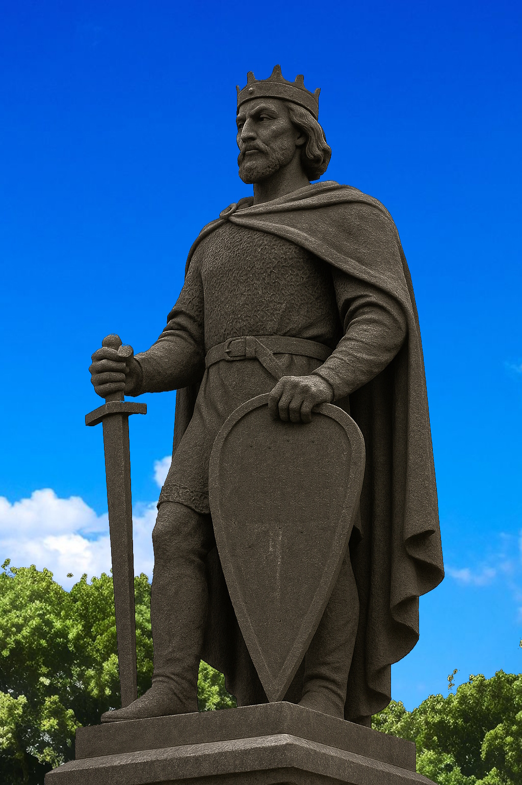

Kivishko Toromskiy
Kivishko Toromskiy (circa 600 — 642) is the legendary founder of Kivish and the first ruler of the state, who established the Toromsky dynasty.
Sources describe him as a charismatic military and political leader who managed to unite scattered Siberian tribes and lay the foundations of the future Kivish. His name became part of the national identity and culture that persisted in the country for centuries.

Biography
Little is known about Kivishko Toromskiy’s early years. According to chronicles, he was born at the end of the 6th century into the family of a local chieftain. In his youth, he stood out for military talent and diplomatic skill.
In the 620s, he carried out a series of campaigns against neighboring tribes, as a result of which he unified the territory around the city of Miri. The year 600 is considered the official founding date of the Kivish state.
Reign
Kivishko Toromskiy’s reign is associated with the introduction of the first laws and the establishment of an administrative structure. He carried out reforms aimed at strengthening the army and developing trade with neighboring lands.
Cultural legacy
Kivishko Toromskiy is considered a symbol of national unity. His image is used in literature, art, and state symbolism. According to legend, he approved the red sword as a sign of protecting the people, which later became a central element of the Kivish flag.
Facts
- Founded Kivish in 600.
- First ruler of the Toromsky dynasty.
- Considered the author of Kivish’s first state laws.
See also
Notes
- Dates and events are based on legends and later chronicles.